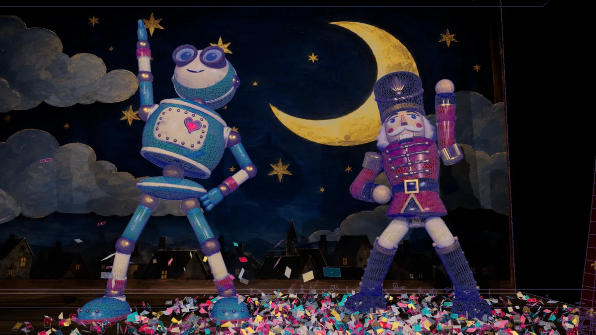
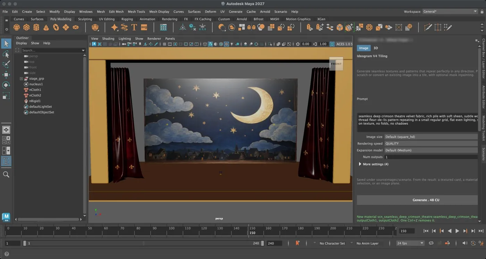
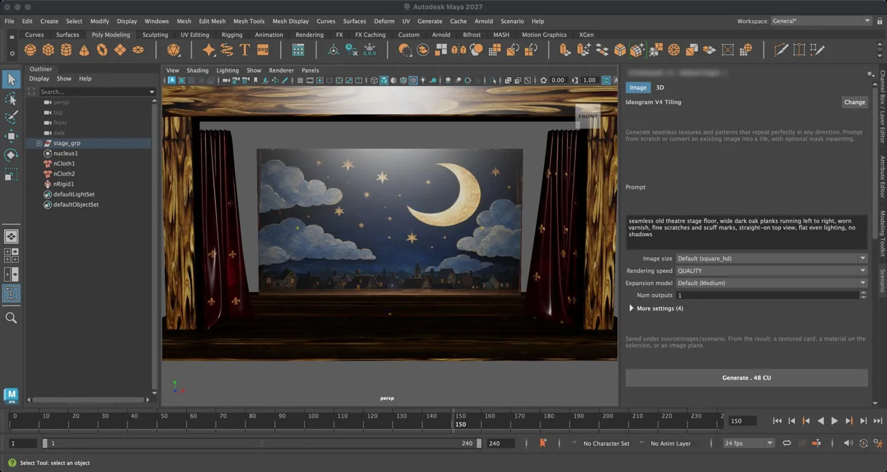
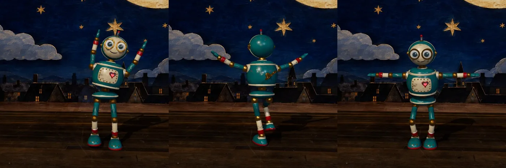
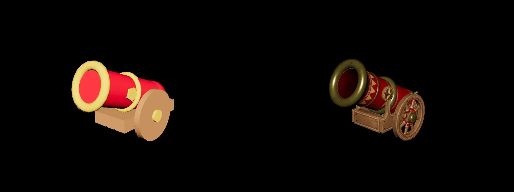
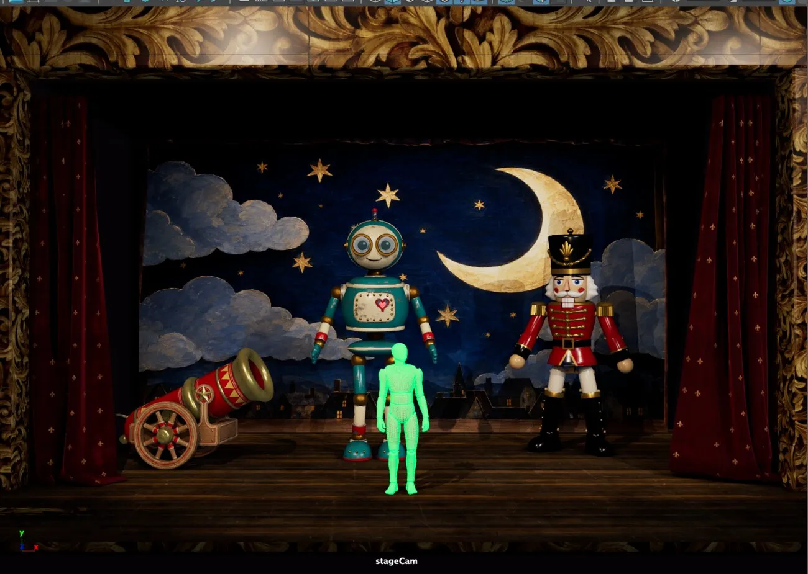
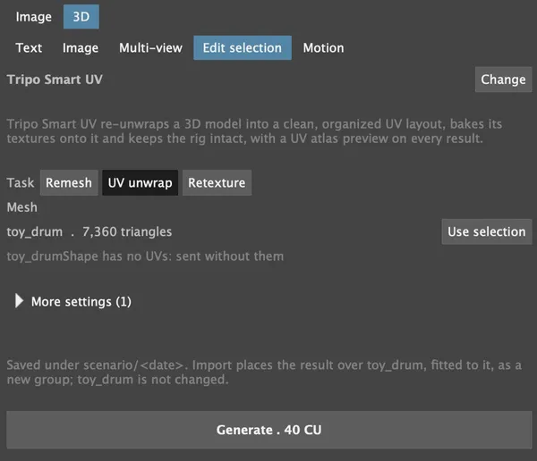
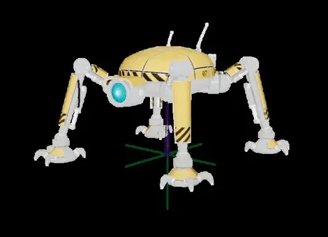

Scenario for Maya adds a panel beside the Channel Box that runs Scenario's 3D, motion, mesh edit and image models on your scene. The Generate button shows the price before you click, and the result lands in the open scene as one undo step. You need Maya 2025, 2026 or 2027 and a Scenario account on a plan with API access.
The launch film, 3 min 46 s. Opening Night, a toy theatre in Maya: the set, the materials, the cast and their moves made with the panel, the curtains, confetti, cameras and lights made with Maya's own tools.
You hand the panel something from your scene, or a sentence. It asks Scenario for the price, sends the request once when you click, and lands the result in Maya.
From your scene
A prompt
An image, or the viewport
Views of an object
A mesh
A character
Scenario models
Text, image or views to 3DRemesh, UV unwrap, retextureText to motionText to image
Generate . 1,800 CU
Priced on the button before you click.
Back in Maya
A model on the ground, at real size
A result over the object or mesh it came from
New UVs, material or geometry on your mesh
A rigged, animated character
A card, a material or an image plane
UndoEach landing is one Ctrl+Z.RecordEach imported group keeps its model, prompt, settings and price as attributes.
Four words
The panel
A Maya workspace control docked beside the Channel Box, opened from Scenario › Scenario Panel. Two tabs, Image and 3D; the 3D tab has five modes: Text, Image, Multi-view, Edit selection and Motion.
A result card
One per job, under the form: its state, its price and the actions valid now, such as Import, Apply..., Card or Material.
CU
Scenario's compute units. The price check is free; the CU on the button are what the request costs, charged to your Scenario team.
Scenario MCP
Scenario's server for agents such as Claude Code, Codex or Cursor. It gives an agent the same models; the results come back as files that the panel imports (step 11).
The example: a toy theatre in eleven steps
One Maya scene, Opening Night: a painted set, a cast of wind-up characters, a circus cannon and a bowing mannequin. Scenario made the set, the materials, the cast and their moves; the curtains are nCloth, the confetti nParticles, and the cameras, lights and edits are done in Maya.

Maya sceneFinal frame↔
The film's first frame. Drag across it: left, the scene with every edge drawn; right, the frame as it appears in the film.
Every picture and clip is a real run in Maya 2027.2 with live Scenario models. Waits are cut: a build at maximum effort took about an hour. Prices in the pictures are examples, as the Generate button showed them for those requests; they change with the model and the settings. The cast was scaled to fit the stage with Maya's own tools. Every picture opens larger when you click it.
Step 1 of 11
Pick a model, see the price
Each mode has a default model and a Change button that lists every model of Scenario's catalogue that fits the mode. The Generate button shows the exact price before anything is sent.
The modes of the 3D tab, the picker, and the price on the button: Generate . 1,800 CU.
The picker of 3D, Text mode: search, Team models, Show legacy.
The model, its settings, and the price on the button.
Open a tab and a mode. Each keeps its own model and its last settings.
Press Change. Search by name, description or tag; Team models shows your team's own models, Show legacy the older ones.
Choose Use this model. The settings below the prompt follow the model, read from Scenario.
Edit the prompt or a setting: the button reads Checking price..., then shows the price. The check is free.
Tip
A price is valid for the exact request it was checked for, for two minutes. Any edit asks for a new one. Price unavailable (Retry) means the check failed; nothing was spent.
Step 2 of 11
From Maya to Scenario and back
A request leaves Maya once, runs on Scenario, and comes back as a file saved in your Maya project, then as nodes in the scene when you press Import.
The request goes to Scenario, the result comes back as a card, saved in your Maya project.
Generate saves the job on your computer, then sends the request once.
The card follows it: Queued, Generating with a percentage when Scenario gives one, then Ready to apply.
The file is downloaded into the current Maya project, with a scenario.json record of how it was made.
Press Import. The card's ... menu has Show file, Open on Scenario, Re-run settings and Copy details.
Cards of the 3D tab. The workspace name is blurred.
Good to know
Jobs run on Scenario. Close Maya during a long build: at the next start the panel offers the results that finished meanwhile. See Jobs.
Step 3 of 11
Dress the set with images
The Image tab makes a picture from a prompt and lands it three ways: as a Card facing the camera, as a Material on the selected meshes, or as an Image plane on the current camera.
The backdrop as a Card with GPT Image 2.5 Sunburst, then the velvet as a Material with Ideogram V4 Tiling.
Card
The painted backdrop, landed as a Card.

Material
Seamless velvet on both curtains, as a Material. It follows the nCloth simulation.

Two more materials
Oak planks on the floor and gilded carving on the frame, each one prompt and one click on Material.LoopThe dressed stage in the launch film.
Open the Image tab. The default model is GPT Image 2.5 Flare; Change picks another.
Write the prompt and press Generate.
On the ready card, press Card for a textured plane at the camera's centre of interest, or select meshes or faces and press Material.
Tip
For a material that tiles, pick a model made for seamless tiles (here Ideogram V4 Tiling) and write "seamless", "top view" and "flat even lighting, no shadows" in the prompt. Images are saved under sourceimages/scenario/.
Step 4 of 11
A character from a prompt
3D, Text builds a model from a sentence. With Scenario Claude Fable 5.2 3D, one prompt describes the character, its rig and one clip.
Tock, a wind-up tin robot, built by Scenario Claude Fable 5.2 3D: 75 named parts, 21 joints.

Three frames of the clip in Maya's viewport: 75 named parts under one group, 21 joints, 13 materials, a performance of 12 seconds keyed on the timeline.LoopTock on the stage in the launch film.
Open 3D, Text. The default model is Meshy 7.1, preset to a 30,000-face game mesh. For a rigged character, press Change, type "fable" and choose Scenario Claude Fable 5.2 3D.
Describe one character: its look, its parts, how it is rigged, and one clip. The importer keys the first clip of a file.
Set Build effort to maximum for a rigged, animated character. More settings holds the face budget, the output format and the topology.
Tock as Scenario Claude Fable 5.2 3D built it, with its clip. Drag to turn, scroll or pinch to zoom; the buttons at the top switch to Solid, Wireframe, Normals, or Rig for its 21 joints. Textures are reduced to 1024 px for this page.
Fable 5.2 3D results in this version
Scenario stores a Scenario Claude Fable 5.2 3D build as a Blender file, and the card's Import in the current release refuses it. The film was made with a development build that imports it. Today, download the result as a GLB through the Scenario MCP or Scenario's API, then use Scenario › Import GLB...: the same builder lands it with its parts, materials, joints, skin and first clip.
What lands
A group in its own namespace, at the size Scenario returns, its bottom centre on the ground below the camera's centre of interest.
Meshes and materials with UVs and normals; OpenPBR materials with their textures under sourceimages/scenario/.
Joints and skin: joints with their rest rotation in the joint orient, skin clusters with up to four influences per vertex, named blend shapes.
The clip: the file's first clip, keyed from the scene's start frame. Every key is a Maya key you can retime or edit in the Graph Editor.
Make a 3D model from this image, in an Image result's menu, opens 3D, Image with the picture already in place.
A nutcracker from its concept picture: Generate . 2,100 CU, 16 parts and 17 joints.
The concept from GPT Image 2.5 Sunburst, and the model built from it by Scenario Claude Fable 5.2 3D: 16 named parts, 17 joints, 23,992 faces, 1.90 m.LoopThe nutcracker beside Tock in the launch film, its concept in the corner.
In the Image tab, generate the concept: one subject, full body, on a plain background.
Open the result's ... menu and choose Make a 3D model from this image. The panel switches to 3D, Image.
Pick the model (the default is Meshy 7.1 Image to 3D), add a prompt if the model takes one, and press Generate.
The nutcracker in 3D. Its file carries three clips, Bow, Idle and March; the panel keys the first one on import.
The Image row takes
File... for a PNG, JPEG or WebP from disk, Viewport for a capture of the view you look through (step 6), or one of the latest Image results, used without a new upload.
Step 6 of 11
A prop from your blockout
The Viewport button in 3D, Image sends the view you look through as the input, so a blockout of Maya primitives sets the proportions of the model.
Same camera, same proportions. The confetti is Maya nParticles.

BlockoutBuilt
The build by Scenario Claude Fable 5.2 3D after one uniform scale: barrel, carriage, two wheels and a fuse as named parts, five joints and a "Fire" clip of four seconds.
What was sent: one frame of the view, 1024 px on the long side.
The blockout in the viewport, and the Image row after a click on Viewport.LoopThe Fire clip in the film, with Maya nParticles confetti.
Block the object out with primitives, one flat colour per part.
Frame it the way you want it understood: a three-quarter view shows more of the shape than a side view.
In 3D, Image, press Viewport. One frame of the active view is captured, without grid, HUD or selection highlight.
Say what the blockout stands for and what to keep: "same proportions and colours as the image". Then Generate.
The cannon in 3D with its Fire clip: barrel, carriage, two wheels and a fuse on five joints.
The capture is saved under images/scenario/captures/ and sent to your project once. It adds nothing to the scene or the undo queue.
Step 7 of 11
Views of an object
3D, Multi-view captures one selected object from its named sides and builds a textured model of the same object, landed over it at its size.
Capture views fills Front, Left, Back and Right for Tripo P2 Multi View: Generate . 240 CU.
The cannon of step 6 after one click on Capture views. The workspace name is blurred. The build from these views was not run for this page.
Open 3D, Multi-view. The default model is Tripo P2 Multi View; Change also lists Tripo 3.1 Multi View and Hunyuan 3D Pro 3.1 Multiview.
Select one object and press Capture views. Temporary orthographic cameras render each side at one scale; nothing is added to the scene.
The Tripo models need the front and at least one more view; the button says what is missing, then shows the price.
Import places the result over the object, at its size and facing the same way. Your object is not changed.
Tip
Model the blockout facing +Z. Left is the object's own left: with the object facing front, it is the side Maya's Right view shows.
Step 8 of 11
Motion from a sentence
3D, Motion turns one simple action into a rigged, skinned figure with its keys on your timeline.
A bow from Meshy Text to Motion: 52 joints, arms re-keyed in Maya.
Four frames of the clip in Maya's viewport.

The figure lands on the ground at the camera's centre of interest.
The message after Import: faces, joints, size, and the frame rate note. The workspace name is blurred.LoopThe bow in the launch film.
Open 3D, Motion. The default model, Meshy Text to Motion, needs only the prompt.
Describe one action: "takes a deep theatrical bow, then stands up straight". Set the length under More settings, 2 to 10 seconds.
Generate, then Import: the figure lands on the ground at the camera's centre of interest, its clip from the scene's start frame.
Your own character
Model
Character
Notes
Meshy Text to Motion
Its own mannequin
The default. Needs only the prompt.
Uthana Text to Motion 3.0
Yours, or its own
Select the character and press Use selection; it rigs and animates it.
Cartwheel Text to Motion
Yours, required
Returns a Maya FBX. Check which way the rig faces.
Send one mesh with one material, standing, facing +Z, arms away from the body. A clip made at another frame rate than the scene's has keys between frames; the message under the form says so.
Step 9 of 11
Edit your own mesh
3D, Edit selection sends one of your meshes to an edit model and brings the result back over it with Import, or onto the mesh itself with Apply..., after a review.
Remesh with Meshy Remesh, then the Apply review.

UV unwrap on a drum modelled in Maya, after Use selection.
The Apply review of a remesh: what changes, what is kept.
After Apply: the new triangle count, and one Ctrl+Z to undo it.
Select one mesh, open 3D, Edit selection and choose the task. Each task keeps its own model.
Press Use selection. The mesh is checked against the model's limits before anything is sent; object, scene and path names stay on your machine.
Retexture needs a prompt that describes the surface. Then Generate.
Import places the result over the mesh as a new group; Apply... opens the review.
Task
Default model
What Apply changes
Remesh
Tripo Retopology v3
The shape is replaced, under your transform; the old shape is kept hidden.
UV unwrap
Tripo Smart UV
The current UV set gets the result's UVs; the old layout is kept.
Retexture
Meshy 7 Retexture
A new material from the result's maps is assigned; the old one is kept.
The Apply review
Before anything changes, the plugin checks that the result is the same surface as your mesh. The review lists What changes, What is kept and what needs a tick under Please confirm. One Ctrl+Z undoes the whole apply.
Good to know
Apply refuses a result it cannot write exactly, and says why; Import stays available. It also refuses skinned, referenced and locked meshes in this version. Edit selection takes GLB results only.
Step 10 of 11
Quads and FBX
Models that offer a quad setting return the mesh in quads as an FBX file. The plugin brings it in through Maya's own FBX importer, as one Ctrl+Z.
Every edge drawn in Maya: the mesh arrives in quads.

Built by Scenario Claude Fable 5.2 3D: 60 named parts skinned to 15 joints, a walk cycle of two seconds. Through the FBX importer the materials arrive as Phong.LoopThe walk cycle in the film, edges and textures side by side.
In the model's settings, open More settings. Set Topology to quads and Output format to fbx.
Generate, then Import. The plugin keeps the scene's unit, up axis, playback range, current frame and frame rate, which the importer would change.
The same build as a GLB, with its walk cycle. glTF stores triangles, so the Wireframe view draws each quad as two triangles; in Maya, through FBX, the mesh is in quads.
Tip
The panel imports GLB and FBX. A model asked for another output format gives a result the panel cannot import. Cameras and lights in the file are left out.
Step 11 of 11
Work with an agent
An agent such as Claude Code, Codex or Cursor reaches the same models through the Scenario MCP, and the results come back as files that Scenario › Import GLB... brings into Maya.
The eleven public Maya skills and the line that installs them.
Connect your agent to the Scenario MCP, as the Scenario docs describe.
Install the Maya skills in the agent, a separate step from the Scenario MCP connection: npx skills add scenario-labs/skills.
Ask the agent for the asset. It saves the result as a file; bring it in with Scenario › Import GLB..., which needs no sign-in.
The eleven Maya skills in scenario-labs/skills, at skills.sh/scenario-labs/skillsscenario-maya-expertscenario-maya-modelingscenario-maya-retopology-uvscenario-maya-riggingscenario-maya-deformationscenario-maya-animationscenario-maya-fxscenario-maya-groomscenario-maya-lookdevscenario-maya-lighting-renderingscenario-maya-pipeline-scripting
In this version
Skills are instructions an agent reads before it works. The plugin has no agent connection of its own: a local Scenario MCP server inside Maya, so an agent could drive the panel's actions, is listed in Known limits.
The illustrated guide
The same steps as an 18-page PDF, one chapter per mode, then install, models, prices, files, agents and troubleshooting. Read it here page by page, or open the PDF.
Guide · PDF · 18 pages A4 · 3.6 MB
Scenario's models work inside Maya and land in your scene
Seventeen chapters. Opening Night, the toy theatre of the film, illustrates every mode.
If the PDF does not open here, read it page by page. The full manual is the handbook.
Scenario for Maya, the guide1 / 18
ReferenceThe short version; the handbook has the rest
Install and update
Every release is one ZIP. The download link always gives the latest release, today . The same steps install it the first time and update an older one.
You need
Maya 2025, 2026 or 2027. Checked by hand on Maya 2027.2 on macOS; Windows and Linux are supported, not yet checked by hand.
A Scenario account on a plan with API access.
Install
Downloadthe latest release, scenario-maya-.zip, and unzip it. Each release on the releases page lists its SHA-256 in SHA256SUMS.
Draginstall_scenario.py from the unzipped folder onto a Maya viewport. It copies the module into your Maya modules folder, loads the plug-in, turns on autoload and opens the Scenario panel.
Allow: Maya 2027 asks whether to load a plug-in from a location it does not trust yet.
Scenario › Scenario Panel opens the panel later. To uninstall, run import install_scenario; install_scenario.uninstall() in the Script Editor (Python); your settings, job list and results stay. To run it from a checkout, see Install in the handbook.
Drag its install_scenario.py onto a Maya viewport, as for the first install. It replaces the installed module and keeps the previous version as ScenarioForMaya.previous until the next update. Your settings, job list, sign-in and results are kept.
If Maya asks for a restart, restart it: while the undo history holds a Scenario import, Maya keeps the previous version in use until the next start.
The plugin makes no update check. To be told, watch the repository on GitHub with Watch › Custom › Releases.
Sign in
Sign in with Scenario: your browser opens on Scenario's sign-in page, you approve, and Maya picks up the session.
Sign in on another device: the panel shows a code to enter on any device, for a machine without a browser.
Use an API key: a key and its secret from your project's API keys on app.scenario.com.
If your account has several teams or projects, pick one. Secrets go to the system's credential store (macOS Keychain, Windows Credential Manager or Secret Service), never to the scene or Maya's preferences. Nothing is sent to Scenario until you sign in.
The panel, top to bottom
Every mode keeps the same order: the model, its inputs, the prompt, the settings, the Generate button with its price, then the results.
123456789
Workspace: the team and project every request goes to. Click it to switch; prices, uploads, results and jobs belong to it.
Tabs: Image and 3D. A tab opens on the mode you used last in it.
Modes of the 3D tab: Text, Image, Multi-view, Edit selection, Motion.
The model, with Change to pick another.
Prompt. It hides when the model takes none. Inputs (an image, views, a mesh, a character) sit above it in the modes that need them.
Settings that change the price, read from the model.
More settings: the model's other settings. A setting left on Default is not sent.
Generate with its price. Ctrl+Enter presses it.
Results: one card per job of this mode, then Jobs, every job of the project.
The ☰ button at the top right has Workspace..., Refresh jobs, Copy diagnostics, the handbook, Privacy, Report a problem and Sign out. Maya's menu bar gets a Scenario menu with Import GLB... for any local GLB, no sign-in needed. The workspace name in the picture is blurred. More in the handbook: Find your way around.
Prices
Every request is priced before it is sent, by a free check, and the button shows the price.
Three rules
A price is valid for the exact request it was checked for, for two minutes. Any edit asks for a new one.
The job is saved on your computer before the request is sent, and it is sent once.
The plugin sets no spending cap of its own. Your team's limits on Scenario apply.
Jobs, at the bottom of the panel or in the Scenario menu, lists every job of the project from every Maya session, newest first.
When Maya closes, Not confirmed, Copy details
When Maya closes: jobs live on Scenario. At the next start, the panel offers the results that finished meanwhile; press Download. A stopped download resumes.
Not confirmed: Maya stopped while a paid request was being sent. The identical request is blocked until you check your project's jobs on app.scenario.com, so you do not pay twice.
Copy details, on a right-click, copies the job's ids, prices, times and error for a support request.
Results go into the current Maya project (File › Set Project), so they travel with your scene.
Where, and what the scene records
What
Where, in the Maya project
3D results
scenario/<date>/<name>/, with a scenario.json record
Images and textures
sourceimages/scenario/<name>/
Captures, views, sent meshes
images/scenario/captures/
Every group the plugin imports carries how it was made as attributes: model, prompt, settings, price, date. The scene opens on machines without the plugin. Anyone you send the scene to can read those prompts.
Scenario › Help › Copy Diagnostics copies versions, paths and state, never a secret, to paste into a GitHub issue with the job's Copy details. Or write to support@scenario.com.
Eight messages and what to do
You see
What to do
The browser does not come back to Maya
Use Sign in on another device and type the code, or an API key.
"Unlock the login keychain"
The macOS Keychain is locked; unlock it and sign in again.
Price unavailable (Retry)
Press it to retry. A request the model refuses shows Scenario's reason.
"Upgrade the plan or wait for the limit to reset"
Your team's plan or limit refused the request; nothing was spent.
"Mesh not accepted by this model"
Too many triangles for the edit model; reduce the mesh or pick another model.
"Nothing was imported: this result is a ... file"
The panel imports GLB and FBX. Set the model's output format to one of them. For Scenario Claude Fable 5.2 3D, see step 4.
Download failed
Press Retry download; it resumes.
A certificate error behind a company proxy
The proxy's root certificate must be in the system's trust store, which the plugin uses.
What this version does not do yet, and what was checked by hand.
Seven limits
Agents: a local Scenario MCP server inside Maya, so an agent can drive the panel's actions, is not built yet.
Scenario Claude Fable 5.2 3D: the card's Import refuses its results, stored as Blender files (step 4).
3D: rigging without a motion, splitting into parts, putting a motion onto a rig already in the scene (retargeting, HumanIK), video to motion.
Clips: only the first animation clip of a file is imported.
Images: editing, upscale, LoRAs.
Other kinds of result: materials, sky domes, video, audio.
Platforms: checked by hand on Maya 2027.2 on macOS. Maya 2025 and 2026, Windows and Linux are supported but not yet checked by hand; Multi-view, Edit selection and Motion were checked in automated runs of Maya.
 Maya sceneFinal frame
Maya sceneFinal frame
 4A character from a prompt3D, Text
4A character from a prompt3D, Text
 7Views of an object3D, Multi-view
7Views of an object3D, Multi-view
 8Motion from a sentence3D, Motion
8Motion from a sentence3D, Motion
 10Quads and FBXTopology, Output format
10Quads and FBXTopology, Output format